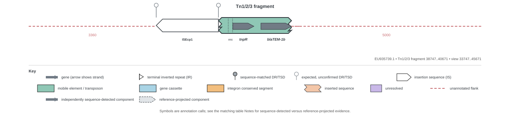
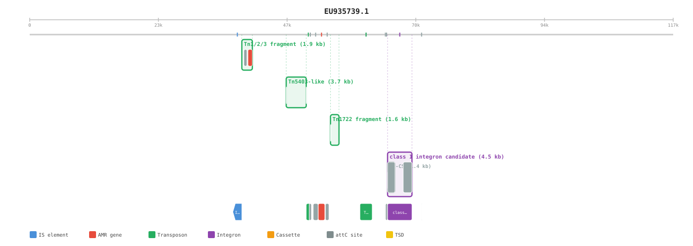
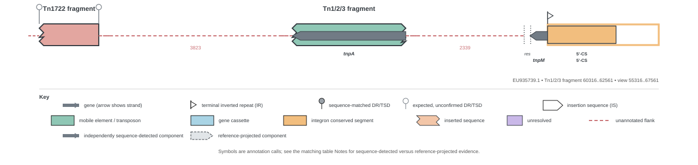

pEK499.fasta Tn1/Tn2/Tn3 proof
PARTIAL_TN123_EVIDENCE: 0 complete loci passed every component, grammar, match and projection check; 2 expected partial loci retained incomplete evidence; 0 loci failed validation.
This report is generated from the annotation evidence. It is not a hand-authored interpretation.
PARTIAL
Tn1/2/3 fragment
EU935739.1: 38747..40671 (-)
rule-based type unresolvedcomponent scores {"Tn1": 31.336, "Tn2": 65.982, "Tn3": 31.415}secondary reference Tn2whole-locus identity 100.0%component structure 0 inserted bp; 0 deleted bpgrammar partial_or_conflictingdetected components 3
| Role | Call | Position | Strand | Identity | Coverage | Status |
|---|---|---|---|---|---|---|
| res | res | 39005..39118 | . | 100.0% | 100.0% | intact |
| tnpR | tnpR | 39124..39681 | + | 100.0% | 100.0% | intact |
| blaTEM | blaTEM-1b | 39864..40671 | + | 100.0% | 93.84% | left_partial |
locus map locus table hierarchy cell format annotation json annotation gff3
{kind=link}
{kind=link}
{kind=link}
Locus map

Original hierarchical view

PARTIAL
Tn1/2/3 fragment
EU935739.1: 60316..62561 (-)
rule-based type unresolvedcomponent scores {"Tn1": 24.707, "Tn2": 24.897, "Tn3": 24.702}secondary reference Tn2whole-locus identity 100.0%component structure 0 inserted bp; 0 deleted bpgrammar partial_or_conflictingdetected components 1
| Role | Call | Position | Strand | Identity | Coverage | Status |
|---|---|---|---|---|---|---|
| tnpA | tnpA | 60316..62561 | - | 100.0% | 74.69% | internal_fragment |
locus map locus table hierarchy cell format annotation json annotation gff3
{kind=link}
{kind=link}
Locus map
